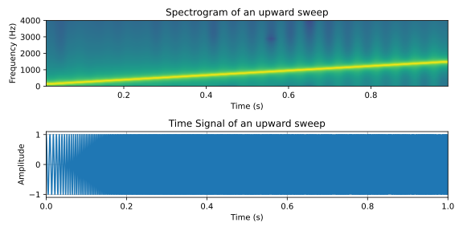
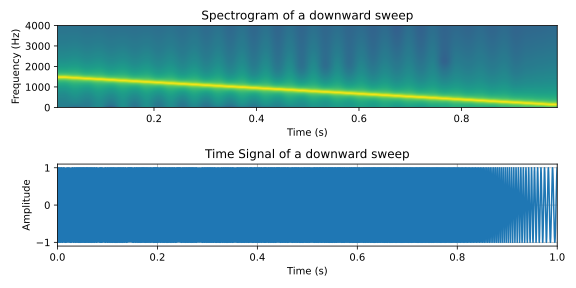
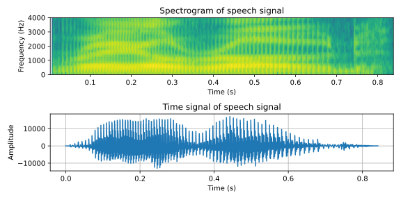

Myotis nattereri above the water (France)
22051
Signals and Systems in Discrete Time
Lecture 12
Reframing: Desert and cheese
Bastian Epp
What happened last week
- A closer look on frequency analysis
- Short-time Fourier Analysis (STFT)
- Time-frequency representation of signals
The spectrogram - a bit of both
Time AND frequency
The spectrogram - a bit of both
Time AND frequency
Pure tone

The spectrogram - a bit of both
Time AND frequency
Sweep upwards

The spectrogram - a bit of both
Time AND frequency
Sweep downwards

The spectrogram - a bit of both
Time AND frequency
Speech signal

What happens in session 12?
...let's dig deeper...
What is going to happen today
- Quickies!
- Deterministic vs. stochastic signals
- Terminology
- Correlation measures in time and frequency domain
- Spectral subtraction as a noise-removal tool
Small-group discussions!
Quickie Nr #8
Take a few minutes to answer the following questions:
- How long is the resulting signal: $a[n] ∗ b[n]$?
- What does the spectrum of a sinusoid multiplied with a rect window/Hann window look like?
- What is a prerequisite that a filter can be applied to a signal by multiplication in the frequency domain?
- How do you judge if a system is stable or not??
- What is a potential issue when designing a digital filter from a analogue filter using the impulse-invariance method?
length(a)+length(b)-1.
It is the Fourier transform of a rect/Hann window centered at the frequency of the sinusoid.
The signal and the impulse response must have the same length - preferrably length(signal)+length(IR)-1.
The poles of the transfer function (in z) need to be inside the unit circle.
This method is prone to aliasing.
A quick overview of what else is there
Let's knock on some doors...
Stochastics: from () to []
From continuous to discrete
- Probability density function → probability mass function
- Expected value \[ \mu = \mathcal{E}[x] = \sum_{n=0}^{L-1} x[n] \cdot p(x[n]) \]
- Variance \[ \sigma^2 = \mathcal{V}[x] = \mathcal{E}[(x[n]-\mu)^2] \]
- Autocorrelation sequence \[ \gamma_{xx}[m] = \frac{1}{L} \sum_{n=0}^{L-1} x[n+m]x[n] = x[n] \ast x[-n] \]
- Crosscorrelation sequence \[ \gamma_{xy}[m] = \frac{1}{L} \sum_{n=0}^{L-1} x[n+m]x[y] = x[n] \ast y[-n] \]
Random DSP: De-noising of signals
Spectral subtraction
De-noising of a signal by thresholding
- Estimation of noise in time and frequency
- Superposition principle allows estimation of noise
Noisy signal is a superposition of a signal and noise
\[ \mathcal{SN} = \{ \mathcal{S} + \mathcal{N} \} \]Signal estimate is the noisy singal minus noise estimate
\[ \mathcal{\hat{S}} \approx \{ \mathcal{S} + \mathcal{N} \} - \alpha \mathcal{\hat{N}} \]Random DSP: De-noising of signals
Spectral subtraction
Signal estimate is the noisy singal minus noise estimate
\[ \mathcal{\hat{S}} \approx \{ \mathcal{S} + \mathcal{N} \} - \alpha \mathcal{\hat{N}} \]
Random DSP: De-noising of signals
Spectral subtraction
Signal estimate is the noisy singal minus noise estimate
\[ \mathcal{\hat{S}} \approx \{ \mathcal{S} + \mathcal{N} \} - \alpha \mathcal{\hat{N}} \]
Random DSP: De-noising of signals
Spectral subtraction
Signal estimate is the noisy singal minus noise estimate
\[ \mathcal{\hat{S}} \approx \{ \mathcal{S} + \mathcal{N} \} - \alpha \mathcal{\hat{N}} \]
Random DSP: De-noising of signals
Spectral subtraction
Signal estimate is the noisy singal minus noise estimate
\[ \mathcal{\hat{S}} \approx \{ \mathcal{S} + \mathcal{N} \} - \alpha \mathcal{\hat{N}} \]
Random DSP: De-noising of signals
Spectral subtraction
Signal estimate is the noisy singal minus noise estimate
\[ \mathcal{\hat{S}} \approx \{ \mathcal{S} + \mathcal{N} \} - \alpha \mathcal{\hat{N}} \]
Athene noctua in flight with a prey (Lissotriton vulgaris)